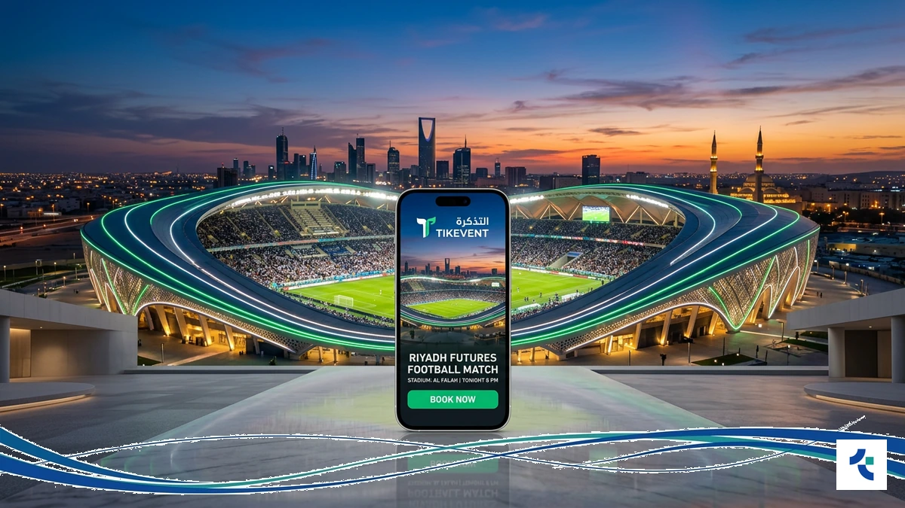
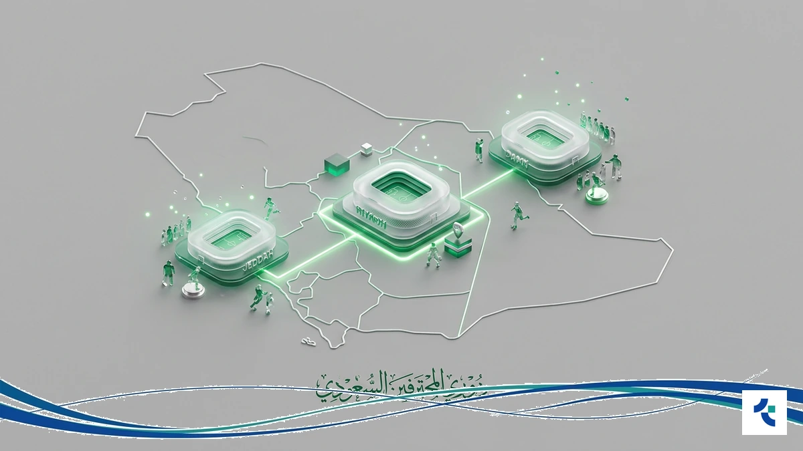
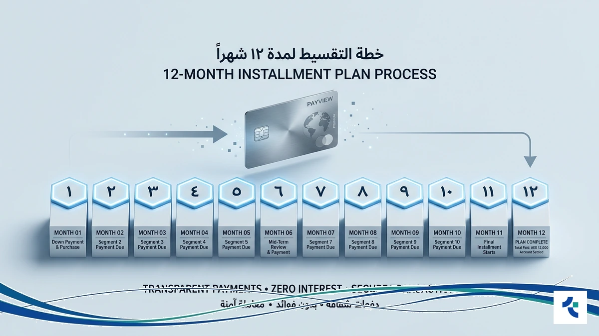
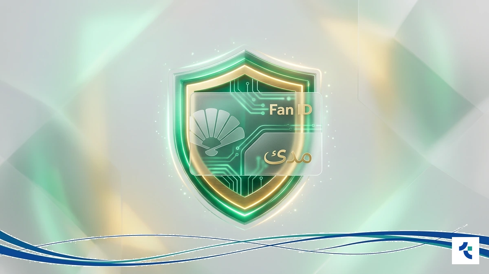
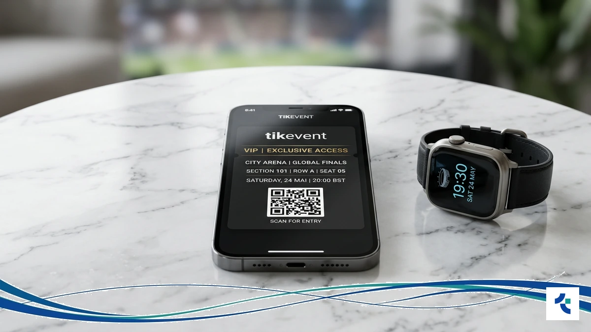
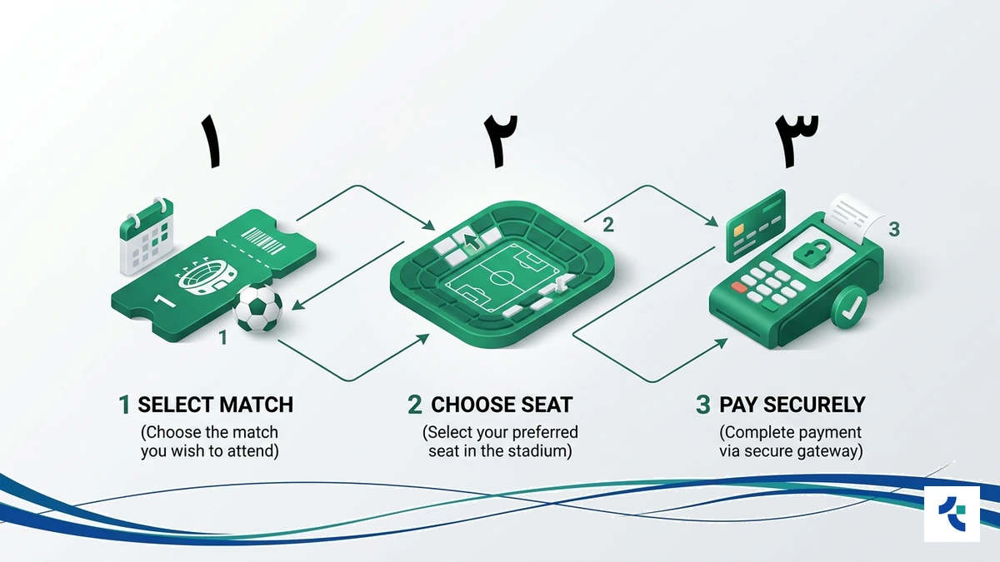

تشهد الملاعب في الرياض وجدة طفرة كروية كبرى مع انطلاق موسم 2026، مما يجعل حجز تذاكر المباريات يتطلب حلولاً رقمية ذكية تضمن لك مقعدك وسط أجواء الحماس المشتعلة في دوري روشن.
تنفرد منصة تيك إيفنت لـ حجز تذاكر المباريات بتقديم تجربة وصول مباشر لمواجهات كبرى مثل تذاكر كأس خادم الحرمين الشريفين، مع نظام أمان تقني يخدم أكثر من 30,000 مستخدم نشط حول العالم حالياً.
بادر الآن بزيارة منصة تيك إيفنت لـ حجز التذاكر لتأمين حضورك في قلب الحدث الرياضي السعودي والاستمتاع بمميزات التقسيط الحصرية التي تسهل عليك متابعة فريقك المفضل.
واقع حجز تذاكر المباريات في السعودية لعام 2026

يشهد سوق حجز تذاكر المباريات في السعودية تحولاً رقمياً شاملاً بحلول عام 2026، حيث أصبح الاعتماد على المنصات الموحدة ضرورة لضمان الأمان والشفافية في ظل الفعاليات الرياضية الكبرى التي تستضيفها المملكة.
تتجه الأنظار حالياً نحو تذاكر الدوري السعودي وكأس خادم الحرمين الشريفين 2025/2026، مما يتطلب حلولاً ذكية لتجنب الازدحام. توفر منصة Tikevent وصولاً مباشراً لهذه الأحداث مع معايير تقنية عالمية تضمن حقوق المشجعين.
- تغطية شاملة لمباريات دوري روشن وكأس الملك.
- إمكانية تقسيط تذاكر المباريات على 12 دفعة.
- نظام استرجاع مرن وخدمة دعم فني متواصلة.
- توفير تذاكر اليوم الكامل للفعاليات الرياضية المصاحبة.
بإمكانك الآن تأمين مقعدك وحجز تذاكر الدوري السعودي عبر Tikevent لتستمتع بتجربة حضور استثنائية دون عناء الطوابير.
يعتمد نجاح التجربة الجماهيرية على موثوقية المصدر، خاصة مع نمو سوق التذاكر الثانوية. تلتزم Tikevent بتطوير بيئة آمنة تخدم أكثر من 30,000 مستخدم، وفقاً لمعايير الاتحاد الآسيوي لكرة القدم التنظيمية.
ابدأ رحلتك الرياضية اليوم مع Tikevent واضمن شراء تذاكر كرة القدم لأقوى المواجهات العالمية والإقليمية بكل سهولة وأمان.
لماذا تختار منصة تيك إيفنت لحجز تذاكر المباريات؟

تدرك منصة Tikevent أن شغف الجمهور في السعودية بمتابعة البطولات الكبرى يتطلب مرونة مالية استثنائية. لذا، صممنا نظام تقسيط فريد يتيح لك توزيع تكلفة حجز تذاكر المباريات على 12 دفعة شهرية ميسرة.
تضمن لك المنصة أماناً مطلقاً في سوق التذاكر الثانوية المطور، حيث نحمي حقوقك كمشترٍ عبر معايير تقنية عالمية. يمكنك الآن الاستمتاع بمواجهات كبرى مثل كأس خادم الحرمين الشريفين دون قلق من تذبذب أسعار التذاكر أو مخاطر الاحتيال.
- تقسيط مرن يصل إلى 12 شهراً لتخفيف الأعباء المالية.
- سوق ثانوية آمنة تضمن صحة التذاكر بنسبة 100%.
- سياسة استرجاع مرنة في حال تغيرت خططك الشخصية.
- دعم فني متواصل لتسهيل عملية حجز تذاكر أونلاين.
يعتمد نجاحنا على خدمة أكثر من 30,000 مستخدم عالمياً، مما يجعلنا الخيار الأول والآمن للراغبين في حجز تذاكر المباريات بذكاء وموثوقية. وننصحك دائماً بمراجعة لوائح الفعاليات الرياضية لضمان معرفة حقوقك القانونية كمشجع.
ابدأ الآن واضمن مقعدك في القمة مع خيارات التقسيط الحصرية من Tikevent، و تعرف على رؤية تيك إيفنت في تطوير تجربة المشجع السعودي.
المنظومة التقنية: كيف نضمن لك حجزاً آمناً وسريعاً؟

تعتمد Tikevent في منظومتها على بنية رقمية متطورة تبدأ من لحظة اكتشافك للمباراة وحتى استلام التذكرة إلكترونياً. نضمن لك السرعة الفائقة في مواجهة ضغط الطلب المرتفع خلال مباريات الديربي الكبرى في السعودية.
تطبق المنصة معايير أمان عالمية بالتعاون مع مستشارين دوليين لحماية بياناتك ومالك. نوفر لك تكاملاً تقنياً مع بوابات الدفع المحلية مثل مدى لضمان إتمام عملية حجز تذاكر المباريات بكل موثوقية وشفافية تامة.
للحصول على تجربة شراء سلسة وآمنة تماماً، سجل حسابك وابدأ الحجز الآن عبر Tikevent واستمتع بأقوى المواجهات.
تتضمن خطوات الحجز اختيار الفعالية ثم تحديد المقعد والدفع أونلاين في ثوانٍ معدودة. يراقب فريق الدعم الفني لدينا استقرار الأنظمة على مدار الساعة لمعالجة أي استفسار يخص حجز تذاكر أونلاين فوراً.
دليل الثقة: لماذا نعتبر الأفضل في سوق التذاكر؟

تعتمد ثقة أكثر من 30,000 مشتري وبائع عالمياً في منصة Tikevent على سجل حافل بالنجاحات الإقليمية، لا سيما في تغطية “مهرجان قطر لكرة القدم”، حيث أثبتت المنصة قدرة تقنية فائقة على إدارة تدفقات الحجز الضخمة.
ولأننا ندرك أن شغفك بمتابعة المدرجات يتطلب مرونة مالية، ابتكرنا لك ميزة التقسيط الفريدة التي تتيح حجز تذاكر المباريات وسداد قيمتها على 12 دفعة شهرية ميسرة، لتستمتع بالقمم الكروية في السعودية دون أي ضغوط على ميزانيتك.
| وجه المقارنة | منصة Tikevent | المنصات التقليدية (عامة) |
|---|---|---|
| عدد المستخدمين النشطين | +30,000 مشتري وبائع | غير معلن / محدود |
| خيارات الدفع | تقسيط حتى 12 دفعة | دفع فوري كامل |
| تغطية الفعاليات الإقليمية | تشمل مهرجان قطر وكأس الملك | تغطية محلية محدودة |
| سوق التذاكر الثانوية | نظام مطور وآمن 100% | نظام تقليدي عالي المخاطر |
نحن نؤمن بأن الشفافية هي أساس استمراريتنا، لذا نحرص على تعزيز شراكاتنا الاستراتيجية مع خبراء عالميين لتطوير معايير الأمان التي تضمن حقك في استرجاع التذاكر وسهولة الوصول إلى مقعدك المفضل في الملاعب السعودية لعام 2026.
خطوات حجز تذكرتك عبر تيك إيفنت في دقائق

تبدأ رحلة حجز تذاكر المباريات عبر تيك إيفنت باختيار الفعالية من القائمة المحدثة لموسم 2026 في الرياض وجدة، حيث تضمن لك المنظمة الرقمية بالكامل انتقالاً سلساً من التصفح إلى تأكيد المقعد في ثوانٍ.
بمجرد تحديد مباراتك، تتيح لك واجهة المستخدم الذكية اختيار فئة التذكرة المفضلة، مع إمكانية الوصول إلى خيارات حصرية مثل تذاكر اليوم الكامل التي تشمل الفعاليات المصاحبة، مما يجعل تجربتك الرياضية في الملاعب السعودية متكاملة وممتعة.
- تصفح الفعاليات الرياضية المتاحة واختيار المباراة المناسبة لك.
- تحديد عدد التذاكر وفئة المقاعد المطلوبة في الملعب بدقة.
- اختيار وسيلة الدفع، سواء السداد الفوري أو تفعيل نظام التقسيط.
- استلام التذكرة الإلكترونية فوراً عبر حسابك الشخصي أو البريد.
- في حال رغبتك في تبديل خططك، يمكنك عرض تذكرتك عبر منصة إعادة بيع التذاكر بكل موثوقية.
بعد إتمام عملية الدفع الآمنة، ستصلك بيانات الحجز فوراً، مع دعم فني متواصل لمعالجة أي استفسار، مما يوفر لك الحماية الكاملة والشفافية التي يتمتع بها أكثر من 30,000 مستخدم نشط حول العالم.
الأسئلة الشائعة حول حجز تذاكر المباريات
هل التذاكر المعروضة في تيك ايفنت مضمونة؟
تعتمد منصة Tikevent معايير تقنية صارمة لتأمين حجز تذاكر المباريات، حيث يتم التحقق من صحة كل تذكرة عبر نظام سوق التذاكر الثانوية المطور، مما يضمن لك دخول الملاعب السعودية بنسبة أمان تصل إلى 100%.
كيف يمكنني تقسيط قيمة تذاكر مباريات كرة القدم؟
تنفرد المنصة بتقديم نظام دفع مرن يتيح لك توزيع تكلفة شراء تذاكر كرة القدم على 12 دفعة شهرية، وذلك لتسهيل الحضور الجماهيري في البطولات الكبرى مثل كأس خادم الحرمين الشريفين دون أعباء مالية فورية.
ما هي سياسة استرجاع الأموال في حال عدم الحضور؟
توفر Tikevent سياسة استرجاع مرنة تتيح لك استعادة أموالك وفق شروط ميسرة، كما يمكنك إعادة عرض تذكرتك عبر منصة إعادة بيع التذاكر الخاصة بنا لضمان عدم ضياع قيمتها المادية في حال تغيرت خططك.
هل يتطلب الحجز استخدام وسائل دفع محلية سعودية؟
نعم، تدعم أنظمتنا التقنية كافة وسائل السداد المحلية مثل “مدى” لضمان إتمام عملية حجز تذاكر المباريات بسرعة وسهولة، مع الالتزام الكامل بمتطلبات الهوية الرقمية للمشجعين لضمان تجربة دخول آمنة ومنظمة للملاعب.
كيف أحصل على المساعدة الفنية أثناء عملية الحجز؟
نحن نوفر فريقاً متخصصاً لمراقبة استقرار الأنظمة الرقمية ومعالجة أي استفسار تقني فوراً، ويمكنك دائماً التواصل مع الدعم الفني المباشر لضمان استلام تذكرتك الإلكترونية عبر حسابك الشخصي أو البريد الإلكتروني في ثوانٍ معدودة.
لا تدع الحماس يفوتك: احجز مقعدك للموسم القادم الآن
لا تتردد في تأمين حضورك لمواجهات موسم 2026 الكبرى في الملاعب السعودية؛ فالطلب يتزايد بسرعة فائقة. تضمن لك منصة Tikevent عملية حجز تذاكر المباريات رقمية بالكامل، تبدأ باكتشاف الفعالية وتنتهي باستلام تذكرتك فوراً.
بإمكانك الآن توزيع تكلفة تذكرتك على 12 دفعة شهرية ميسرة عبر نظام التقسيط الحصري لدينا، مما يمنحك مرونة مالية استثنائية. استمتع بأجواء “كأس خادم الحرمين الشريفين” دون قلق، فنحن نوفر سوقاً ثانوية مطورة تضمن موثوقية التذاكر بنسبة 100%.
سجل حسابك الآن لتضمن حجز تذاكر المباريات الآن قبل نفاد المقاعد، أو تواصل معنا للحجوزات الخاصة والمجموعات لضمان تجربة جماهيرية لا تُنسى في قلب الحدث.